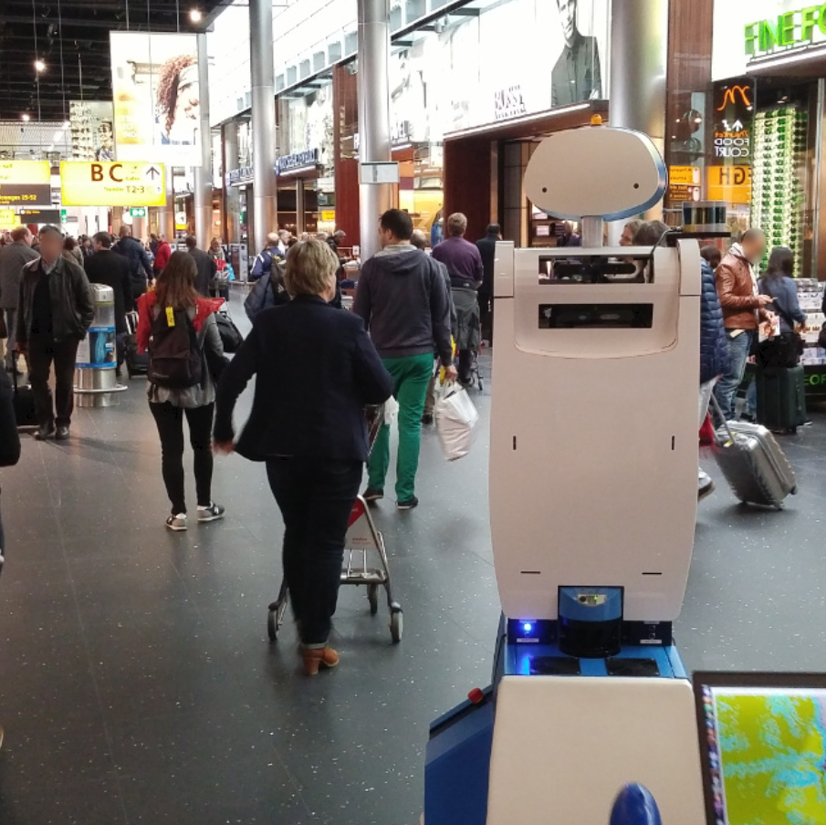
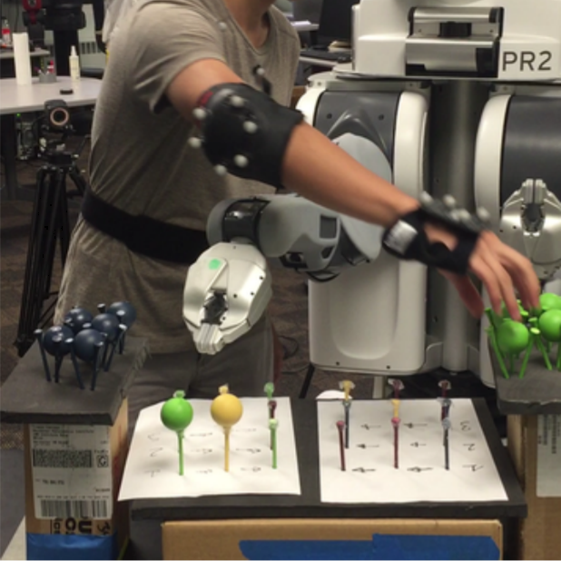
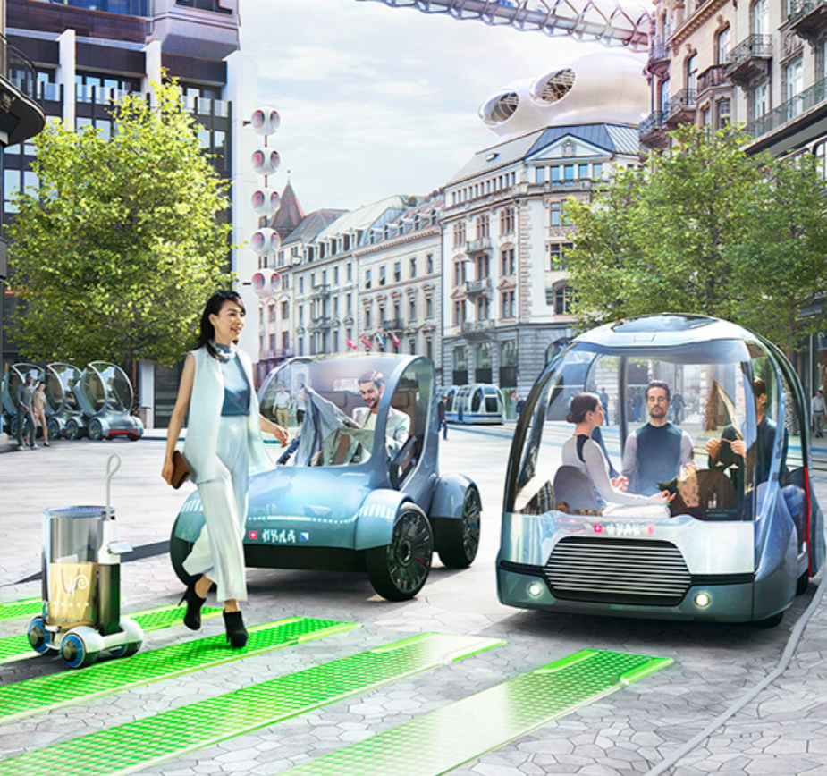
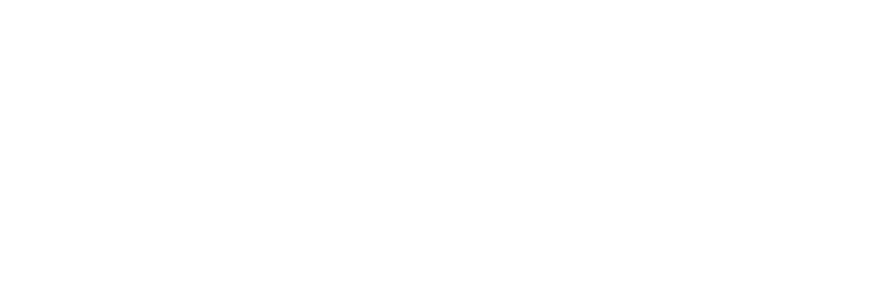
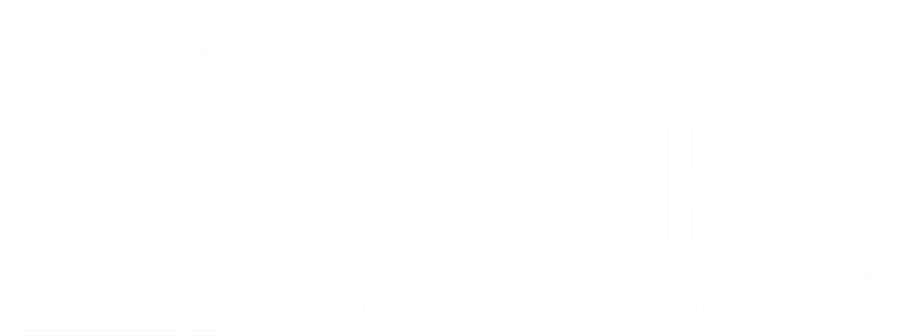

Pioneering the Future of Human Motion Prediction on the 7th edition on our workshop on Long-term Human Motion Prediction
Join us for the 7th Workshop on Long-term Human Motion Prediction, where experts from around the globe gather to share insights, innovative research, and cutting-edge developments in predicting human motion over extended periods. This workshop is a unique platform to explore how advancements in AI, robotics, and biomechanics can revolutionize human-computer interaction and safety.
Areas of interest
Anticipating human motion is a key skill for intelligent systems that share a space or interact with humans. Accurate long-term predictions of human movement trajectories, body poses, actions or activities may significantly improve the ability of robots to plan ahead, anticipate the effects of their actions or to foresee hazardous situations. The topic has received increasing attention in recent years across several scientific communities with a growing spectrum of applications in service robots, self-driving cars, collaborative manipulators or tracking and surveillance. This workshop is the seventh in a series of ICRA 2019-2025 events. The aim of this workshop is to bring together researchers and practitioners from different communities and to discuss recent developments in this field, promising approaches, their limitations, benchmarking techniques and open challenges.

Collaborative and production robots

Automated driving
Multi-modal Foundation Model Integration
Call for Papers
We welcome researchers in the field to submit papers to be presented in pitch-talks and as posters. Submitted manuscripts can be at most 4 pages (excluding references), formatted according to ICRA standards using the Paper Template downloadable on the IEEE ICRA 2025 website (two-column format). We encourage authors to additionally submit a video clip to complement their manuscript. Submissions will be reviewed and selected based on their originality, relevance to the workshop topics, contributions, technical clarity, and presentation.
Important Dates:
- Submission Deadline:
April 7, 2025Extended to April 14, 2025 - Author Notification:
April 21, 2025Final Extension to May 5, 2025 - Workshop: May 19, 2025
We will accept submissions through CMT
We look forward to receiving your submissions!
- Motion trajectory prediction in 2D and 3D
- Predicting articulated human motion
- Early action and activity recognition
- Motion and Task Planning in dynamic environments considering motion predictions
- Uncertainties related to prediction inputs/outputs and their propagation
- Anticipation of group and crowd motion
- Human motion prediction and safety
- Human-robot Interaction considering predictions
- Evaluation of prediction algorithms: datasets, metrics, and benchmarks
- Predictive planning and control
- Applications of motion prediction techniques
- Visual scene prediction
Topics of Interest
Program Committee
- Nils Mandischer, University of Augsburg
- Till Hielscher, University of Stuttgart
- Andrey Rudenko, Bosch Corporate Research
- Janik Kaden, Chemnitz University of Technology
- Nemanja Djuric, Aurora Innovation
- Patrick Hinsen, DLR
- Boris Ivanovic, NVIDA
- Carmela Calabrese, IIT
- Yuchen Liu, Bosch Corporate Research
- Stefan Becker, Fraunhofer IOSB
- Junyi Shi, Aalto University
- Luigi Palmieri, Bosch Corporate Research
- Tim Schreiter, TUM
- Tim Salzmann, TUM
- Kay Pompetzki, TU Darmstadt
- Luca Castri, University of Lincoln
- Stefan Schubert, Chemnitz University of Technology
- Vincent Pfaefflin, KIT
Proceedings
Program
The workshop is planned for Monday May 19 2025
Following the program.
| Time (EDT/UTC-4) | Speaker | Title | Abstract |
|---|---|---|---|
| 9:00-9:15 | Organizers | Intro | |
| 9:15-9:45 | Robin Kirschner, TUM | Chances and Challenges of Human Motion Predicition in Safety Applications | Human motion prediction plays a key role in enabling safe and efficient interaction between humans and machines. However, the actual deployment of safety-critical features is only viable when these systems meet stringent, certifiable safety standards. This requirement presents significant challenges, particularly for safety mechanisms that rely on visual perception and artificial intelligence. Focusing on human-robot interaction in the context of industrial manipulators, this talk outlines the primary challenges associated with certifying AI-based safety features. It introduces a structured classification of these challenges and explores potential strategies for embedding certification considerations into the research and development lifecycle of human motion prediction technologies. |
| 9:45-10:15 | Elahe Arani, Wayve | Learning to Drive Anywhere Safely: Generative World Models for Generalizable Autonomy | Ensuring safety and generalization in autonomous driving requires rethinking how we predict and respond to a dynamic world. This talk presents Wayve's embodied AI approach to self-driving, which unifies motion prediction and policy learning in a single end-to-end driving intelligence. We discuss how training a foundation model for driving on diverse real-world and simulated experiences - without reliance on HD maps - equips it with the "common sense" to handle novel environments and rare scenarios. We will highlight how generative world models enable scalable, data-driven behavior modeling, support safe policy learning, and provide a path toward truly generalizable autonomy. Drawing on recent advances at Wayve, the talk offers a forward-looking perspective on building AI systems that can adapt to the open-world nature of driving. |
| 10:15-10:45 | Sergio Casas, Waymo | Scaling Up Behavior Models for Motion Forecasting and Planning | At Waymo, our mission is to build the World's Most Trusted Driver. Achieving this goal requires a profound understanding of the behaviors of other agents around the self-driving vehicle, in conjunction with its own planning decisions. Given the success of scaling up autoregressive Transformer models for language modeling, we investigate whether analogous principles can be effectively applied to behavior modeling. To address this question, we present empirical scaling laws for motion forecasting and planning that reveal highly encouraging performance trends, demonstrating the significant potential of this approach for scalable and robust behavior understanding in autonomous driving. |
| 10:45-12:15 | Poster Session | Twelve posters | |
| 12:00-13:30 | Lunch break | ||
| 13:30-14:00 | Marco Pavone, NVIDIA | Building Physical AI with Foundation-Model-Driven Closed-Loop Simulation | Foundation models—trained on vast and diverse data reflecting the breadth of human experience—are at the core of the ongoing AI revolution, reshaping how we create, solve problems, and work. The principles behind their construction can also inform the development of another transformative technology: autonomous vehicles and Physical AI more broadly. In this talk, I will present recent research that leverages foundation models to enable controllable, end-to-end closed-loop simulation, with the ultimate goal of dramatically accelerating the development of Physical AI systems. |
| 14:00-14:30 | Arash Ajoudani, Italian Institute of Technology | Predicting Human Motion Through Physical AI for Real-Time, Adaptive Interaction | In this talk, I will present recent advances in the use of AI for monitoring both the physical and cognitive states of human users, including motion patterns, workload, attention, and intent. By integrating multi-modal sensing with machine learning and predictive modeling, robots can adapt their behavior in real-time to support human performance, reduce physical and cognitive strain, and enhance collaboration quality. I will also discuss how these capabilities contribute to building trust in shared autonomy settings, where transparent, context-aware robot responses foster user confidence and engagement. The talk will highlight applications across industrial collaboration, assistive robotics, and adaptive control, emphasizing the role of physical AI in bridging perception, prediction, and proactive interaction. |
| 14:30-15:00 | Luis Figueredo, University of Nottingham | Getting Comfortable around Humans: A Path for Close and Physical Human-Robot Collaboration | Recent advances in robotics have significantly narrowed the gap between humans and robots. However, achieving truly close, physical, and intuitive interaction remains a major challenge. Closing this gap demands collaboration built on mutual understanding, communication, and trust in each other's ability to complete tasks safely. For this, robots must not only communicate effectively but also develop a deep awareness of human physical capabilities, ergonomics, and a shared sense of embodiment. This requires layered integration of responsive, reactive, and safety-certified functionalities. In this talk, I will explore how combining physically-aware safety mechanisms with multimodal interaction—spanning language, body-language, force, ergonomics and biomechanics—can advance human-robot collaboration. I will present methods and tools that leverage these elements to inform robot decision-making, enabling safe, adaptive, and comfortable learning in close-contact settings. |
| 15:00-15:15 | Coffe break | ||
| 15:15-15:45 | Andrea Bajcsy, Carnegie Mellon University | System-level Failures in Human Trajectory Prediction | Data-driven trajectory prediction models have made remarkable progress in recent years, enabling robots to navigate complex human environments such as city streets, homes, and airways with increasing confidence. Nevertheless, these models still make prediction errors when faced with novel interactions. However, not all prediction errors are made equal. This talk delves into the concept of "system-level" prediction failures—instances where mispredictions significantly degrade robot performance. I will discuss some of our work on formalizing “system level” trajectory prediction failures, automatically identifying them in growing deployment datasets, and using this data to refine trajectory predictors. |
| 15:45-16:15 | Christoforos Mavrogiannis, University of Michigan | Towards Fluent Human-Robot Teamwork via Implicit Communication | Robots have the potential to enhance productivity and improve quality of life by assisting people in critical domains like manufacturing healthcare and the home. These domains are dynamic and unstructured and require robots to work with and around people who might be occupied with demanding tasks on their own. This requires imbuing robots with an understanding of how their activities mesh with the activities of humans around them. My work addresses the challenge of modeling this meshing by integrating models of human behavior prediction with mechanisms for robot decision making. In this talk I will discuss recent research from my lab on enabling robots to fluently work with and around people in tasks involving robot navigation in dense crowds and physical collaboration. I will highlight how mathematical abstractions grounded on principels from human communication may empower even simple human models to produce efficient fluent and positively perceived robot behaviors under close interaction settings. |
| 16:15-16:45 | Marlena Fraune, Amazon Robotics, Plover | But Where Are You Going?! Motion Is What Is Most Important for Real-World Co-Present Mobile Robots | Mobile robots are being introduced to industrial workplaces in roles that require copresence with humans. To develop effective robots that do not negatively impact humans, including their subjective experience and ability to get their work done, we must understand humans’ needs for working near these robots. In this paper, we examine what human workers need from copresent robots’ motion during work at a large warehouse. To do so, report and synthesize findings about robot motion from across five studies (e.g., focus group, observation, experiment). Results indicate that workers were most focused on robot movement, including consistency, distance, prioritizing people, and indicating when it sensed people. Researchers and practitioners can use these findings to prioritize what aspects of mobile robots to develop to improve human worker experiences around robots and team efficiency. |
| 16:45-17:30 | Speakers and Organizers | Interactive session |
Scan the QR code or submit your questions here. |
| 17:30-17:40 | Organizers | Discussion and conclusions |
Organizers


In collaboration with





Get in touch
In case you wish to get more information feel free to reach us via e-mail!
andrey.rudenko@de.bosch.com
luigi.palmieri@de.bosch.com
tim.schreiter@tum.de